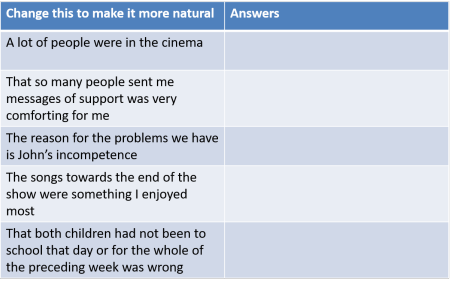

Anticipatory or existential there and it

Do your learners produce unnatural utterances like these?
- A fire was in the house.
- A seat was empty.
- Learning fluent French by working and living in the country is not difficult.
- Noisy children were in the garden.
- A bank is on the corner.
- A knife is on the table.
If they do, it may be because you haven't focused them on existential sentences or the use of anticipatory or dummy subjects.
 |
Two complementary principles |
There are two principles at work here which combine to determine the normal or canonical ordering of factual information clauses.
 |
The end-weight principle |
There is a clear tendency in English to place longer and more complex
phrases towards the end of sentences rather than at the beginning.
The key concept here is heaviness. The longer and more complex a
constituent of a clause is, the heavier it is said to be.
For example, modifying a noun with a single adjective as in:
The red car
is a very light way to do so and the tendency in English is to place
light elements such as adjectives, numerals and other determiners before
the noun. That's why, in English, we get:
three cars
not
cars three
(as we do in a range of other languages, including Yoruba and many
African languages as well as Thai and many other South-East Asian
languages).
On the other hand, heavier elements tend to follow what they modify so
we have, e.g.:
The car which I drove for many years when I was a
student
Here is an example of how heaviness affects how natural-sounding a sentence is. Read the following aloud and decide which to you seems the most natural, normal way to order the items in the sentence. Then click here:
- The problem was John's complete and absolute denial that there was something seriously wrong with the car.
- John's complete and absolute denial that there was something seriously wrong with the car was the problem.
Which of them sounded more natural to you?
If you chose
sentence 1., you are in the majority.
Sentence 2. flouts the
end-weight rule by placing the heavy (i.e., more complex) expression at
the beginning. The end-weight principle accounts for a great deal
of word ordering in English which is otherwise not easily explained.
 |
The end-focus or old-before-new principle |
The other principle at work in English is the fact that new information is placed towards the end of sentences. Here's a very clear example (from Bruno, no date):
- Every Tuesday, Samantha takes her dog to the dog park near her house. The city of San José maintains the dog park in an effort to promote healthy lifestyles. The city of San José sustains several dog parks throughout the city.
- Every Tuesday, Samantha takes her dog to the dog park nearby her house. The dog park is maintained in an effort to promote healthy lifestyles by the city of San José. The city of San José sustains several dog parks throughout the city.
It is easy to see that 4. flows more easily than 3. because the reader is led through the three sentences by reference to old information before the introduction of new information. This is an example of theme-rheme structuring. (For more, go to the guide the theme-rheme structure, linked in the list at the end of related guides.)
 |
So what? |
Taken together, the end-weight and end-focus principles have a powerful effect on word order in English, even though the language is often said to have a very firmly fixed word order. The effect is twofold:
- Extrapositioning:
The notional subject of the verb is moved towards the end of the clause, a phenomenon known as postponement, so instead of:
The fire did the damage
we might have
It was the fire that did the damage
and instead of
Some children were damaging the garden
we might have
There were some children damaging the garden - Fronting:
An anticipatory or dummy subject fronts the sentence but, unlike most cases of fronting, this is in fact the unmarked rather than marked form in English (and that is not so in many languages). For example, fronting an adverb usually marks it in some way for special emphasis, so the difference between:
Yesterday, I went shopping
and
I went shopping yesterday
is that in the first case the time is marked as especially important and in the second, it is not.
However, this is not the case for anticipatory there and it clauses so
There is a snake in the garden
is the normal, unmarked, way of stating a fact in English
but
A snake is in the garden
is less common and therefore more strongly marked.
The resulting sentence contains two subjects: the clause which is what we would normally expect to be the subject of the verb and the anticipatory subject, there or it.
A second reason for focusing on this area in our teaching is that it
is by no means straightforward, as we shall see and avoiding errors such
as:
*Anything can't be wrong
*To learn a new language is fun
etc.
is mostly a matter of knowing how anticipatory, dummy subjects are used
in English and being aware of the fact that this is the
normal way of stating facts.
That may be in contradistinction to the way in which the learners' first
language(s) operate(s).
 |
Existential there clauses |
Compare these two sentences:
- There is something rather strange and frightening about him.
- Something strange and frightening is about him.
Sentence 6. sounds strange even though it is grammatically
correct. What English does here, to comply with the end-weight
principle, is to insert a dummy subject and allow the noun phrase to be
shifted to the end of the sentence. Unsurprisingly, this is called
'shifting' in the literature.
(Note here that we are talking about there as a dummy subject,
not there as an adverb. When the word is an adverb it is
usually stressed
There's John!
Please sit
there
but when used as a dummy, it is unstressed
There's a bank on the corner.
Here are some more examples of the ways English can use the dummy or existential there:
- There can't be anything very wrong.
- There was someone playing the piano in the house.
- There are good reasons for the problem.
- There have been some nasty incidents recently.
- There's a man with a dog in the garden.
Now try to alter the sentences to avoid the existential there and see what you get. Click here when you have done that.
If you try to alter those sentences to
avoid the dummy there, you get rather odd and
unacceptably foreign-sounding results like:
*Anything can't be wrong
?Someone playing the piano was in the house
*The problem has good
reasons
*Nasty incidents have been recently
?A man with a dog is in the
garden.
Frequently, it is difficult to identify exactly what is wrong with a
learner's production because it 'just sounds wrong'. Avoidance of
the existential there clause is often the reason.
The other source of error with existential there sentences is
to neglect to note (or be told) that the subject must be indefinite.
For example:
We can have:
There's a girl in the classroom
but not:
*There's the girl in the classroom
unless the word there is an adverb of place
and
There's something I want to ask
but not
*There's that question I want to ask
(Note, however, that informally a definite noun phrase as the
subject is allowed:
There's my feelings to consider
There's Mrs. Smith who needs inviting.)
Concord with the existential there
Usually, in informal English, we assume that the dummy there is singular. This is not permitted in very formal English or anywhere near a grammar pedant. We can, therefore, have both:
- There's two men coming up the path.
- There are two men coming up the path.
The reason for this slight ambiguity is that, grammatically, there is the subject of the sentence but the subject of the 'normal' clause is notionally still the subject of the verb so both verb forms are allowable.
Relative pronoun clauses with existential there
This is a frequent pattern in English. For example
- There's nothing more (that) I want to see.
- There's nothing (which) interests me here.
(Note that in 15. it is possible to omit the relative which. That is not possible in other relative clauses because it is the subject of the verb.)
Other verbs with the existential there
The existential there is almost exclusively used with a form
of the verb be.
Up to now we have only been using there with the verb be
but there are other verbs which can be used. The copular verbs
seem and appear are obvious candidates but others are possible.
- There stood a suspicious-looking man on the corner.
- There appears to be a mistake in the figures
- There comes a time when I have simply to give up.
Uses like these are mostly literary and in 18., the clause has become a semi-fixed expression.
 |
How many sorts of there clauses? |
Quirk et al (1972) identify six sorts of existential there sentence
forms. Others, e.g., Chalker (1984), refer to there used
this way as the introductory there without setting out the
possibilities in any detail and others, e.g., Parrott (2000) refer
to it as a dummy subject, again without setting out the
details. We'll follow the first of these in this list but reduce
the list to two main sorts, putting together related formulations
(because that's the way to teach them). The essential differences
are down to transitivity in English verbs.
This is not a teaching syllabus, of course, but teachers need to be
aware of the types of sentences in which the anticipatory, dummy or existential there occurs in
English because these are not paralleled across all languages and
present learners with some difficulties.
- Intransitive verbs
- There is / are + Subject + Verb
- There was a man waiting
- There was no-one looking
- Was anyone coming?
- There is / are + Subject + Verb + Adverbial
- There was a frog in the pool
- There was nobody about
- Were there any people there?
- There is / are + Verb + Subject
Complement
- There is something unusual
- There isn't anything suspicious
- Is there something wrong?
- There is / are + Subject + Verb
- Transitive verbs
- There is / are + Subject + Verb + Object
- There are three people asking questions
- There aren't any people eating the food
- Is there anyone ringing the bell?
- There is / are + Subject + Verb + Object + Object
Complement
- There are some men working on the house
- There hasn't any work being done on it
- Are there any questions needing answers?
- There is / are + Subject + Verb + Object +
Adverbial
- There is someone making a noise outside
- There were some children cleaning the playground up
- There have been lots of people photographing the lions in the zoo
- There is / are + Subject + Verb + Indirect Object + Direct
Object
- There is someone making the kitchen a mess
- There isn't anything to give you
- Is there anyone asking you questions?
- There is / are + Subject + Verb + Object
Adverbials and complements can, in fact, be tacked on to all the forms so we might get, for example:
- There is something unusual here
- There are three people asking questions loudly
- There hasn't any work being done on it yet
- There isn't anything in the cupboard to give the children to eat
There are, somewhat more rarely, passive possibilities with the existential there. For example:
- There will be no stone left unturned
- There have been four windows broken
it as a dummy or anticipatory subject |
The principles of end focus (old before new) and end weight are at work here, too.
The pronoun it can stand for complete clauses and is often
used in this way to allow us to shift the clause itself to the end.
This is why it is called the anticipatory it. The pronoun
anticipates what it stands for (often a nominalised clause).
We can convert a sentence with a nominalised clause to one with an
anticipatory it-subject like this:
To leave the party early was a mistake
becomes:
It was a mistake to leave the party early.
Try doing it in these examples and then click here.
- To leave India without seeing the Taj Mahal is crazy.
- That he is such a good cook is surprising.
- What I do or say to her doesn't make a difference.
- To hear him talking so rudely and callously shocked me.
More natural formulations might be:
- It is crazy to leave India without seeing the Taj Mahal.
- It is surprising that he is such a good cook.
- It doesn't make a difference what I do or say to her.
- It shocked me to hear him talking so rudely and callously.
The anticipatory it can also stand for a range of nominalised phrases and clauses as in, e.g.:
- adjective plus non-finite to-infinitive
- It is wonderful to
see her
It is a delight to watch
It's fun to try
It is a shame to miss the concert
It is a pity to lose the money
It is odd to forget them - adjective plus non-finite -ing clause
- It is lovely being here
It is horrible going shopping with her
It was nasty walking in the rain - nominalised finite that-clauses
- It is odd that she isn't here
It is a pity that she can't come
It is a shame that he's away
It as a dummy subject with no discernible meaning is used as the subject or object of many statements about weather, time, place and condition as well as some semi-fixed expressions. For example:
- It is raining
- It is Wednesday
- It would be nice if you helped
For a little more in this area, see the guide to nominal clauses, linked from the list at the end, in which the clause as the object or subject of a verb is discussed.
 |
A note about other languages and teaching this area |
Very few languages handle this area in the same way that English
does. Few languages are as obsessed as English is with inserting a
dummy subject and in those languages, the subject is often simply
omitted, so you'll get errors such as
*I don't like when you call me
stupid
*I think is probable they will win etc.
Even if they do use a dummy it (as some do) they will probably
not use an existential form such as there.
For example,
There is a mouse in the house
might in other
languages be
It has a mouse in the house
It gives a mouse in the house
The
house has a mouse
It exists a mouse in the house
It finds a mouse in
the house
and so on.
Language such as Greek and Romanian which do not have a dummy subject of
any kind will often use a verb meaning exist so, directly
translating, speakers of those languages might produce
Exists a
mouse in the house.
Careful attention and alertness to your learners' production in this area pays dividends in terms of their being able to produce more natural sounding and less foreign utterances.
 |
Awareness raising of the principles of end focus and end weight
|
It is probably worth a bit of classroom time to raise your learners' awareness of these two fundamental principles because they underlie so much which is otherwise hard to explain.
A straightforward way to start the process is to present the learners
with sentences which conform to the principles, contrasted with some
that don't but express the same meaning. For example, which of the
following are the most natural formulations? Click on the table
when you have an answer.
From there, it's a short step to getting learners to be able to
reformulate sentences more naturally as in this example. Click on
the table when you have the answer in your head.

| Related guides | |
| the word order map | for links to other guides in this area |
| cleft sentences | explaining how we get from, e.g., She liked the hotel to It was the hotel she liked |
| word ordering | for a guide to canonical and marked word ordering in English |
| fronting | for an analysis of how items may be marked and moved to the beginning of clauses |
| nominalised clauses | clauses acting as noun phrases are often the referent for the anticipatory it discussed above |
| theme and rheme | for more on how the anticipatory and existential uses of it and there form the themes |
| postponement and extrapositioning | which explains how and why items can be moved to the end of a clause or sentence |
References:
Bruno, C, n.d., Old Information before New Information, San
José State University Writing Center, at
http://www.sjsu.edu/writingcenter/ [accessed February 2015]
Chalker, S, 1984, Current English Grammar, Basingstoke:
Macmillan
Croft, W, 1990, Typology and Universals, Cambridge: Cambridge
University Press
Parrott, M, 2000, Grammar for English Language Teachers (2nd
Edition), Cambridge: Cambridge University Press
Quirk, R, Greenbaum, S, Leech, G & Svartvik, J, 1972, A Grammar of
Contemporary English,
Harlow: Longman